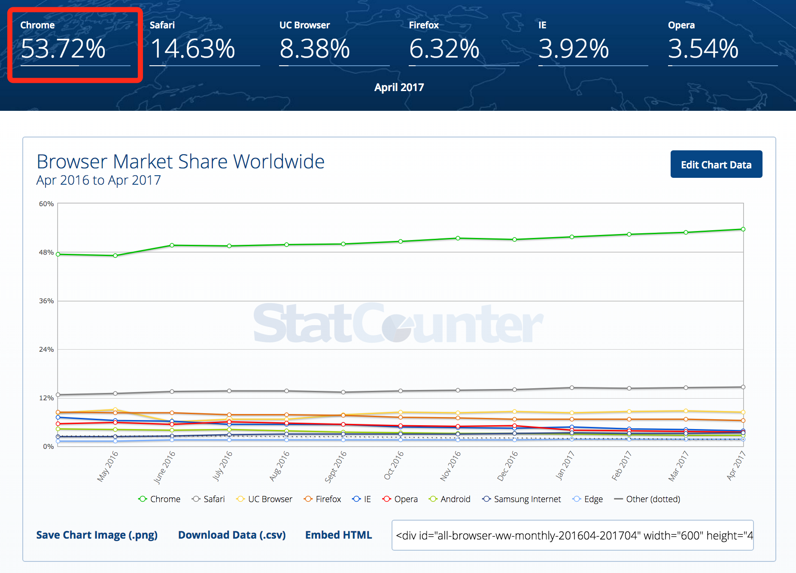
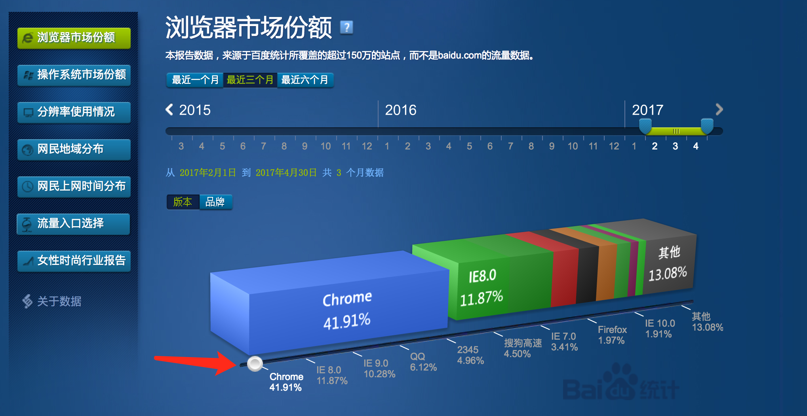
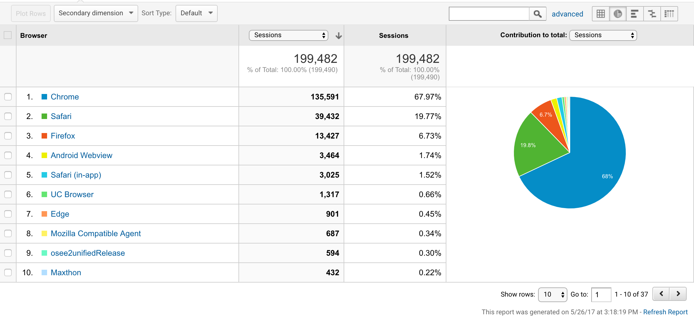
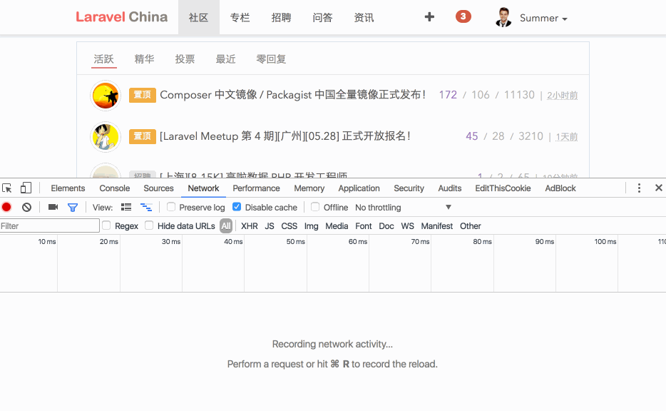
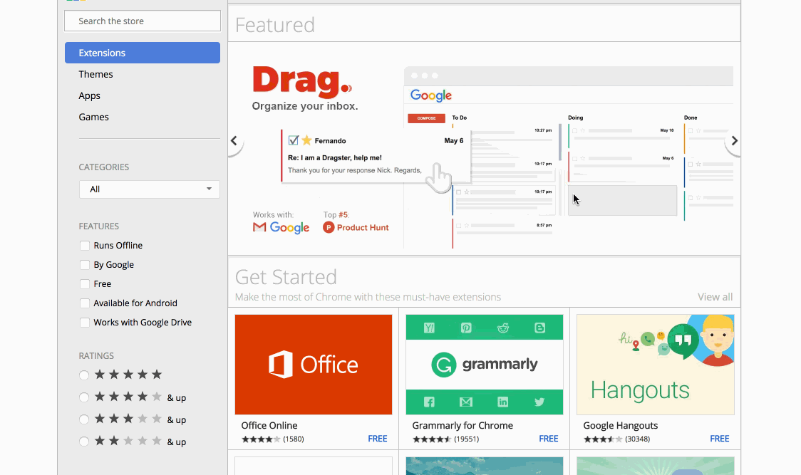
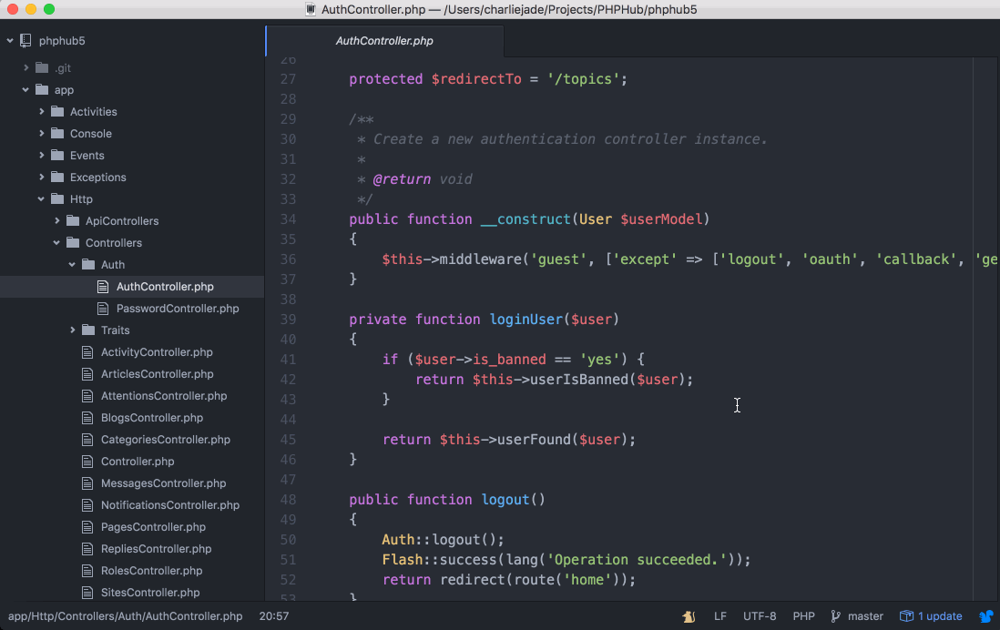
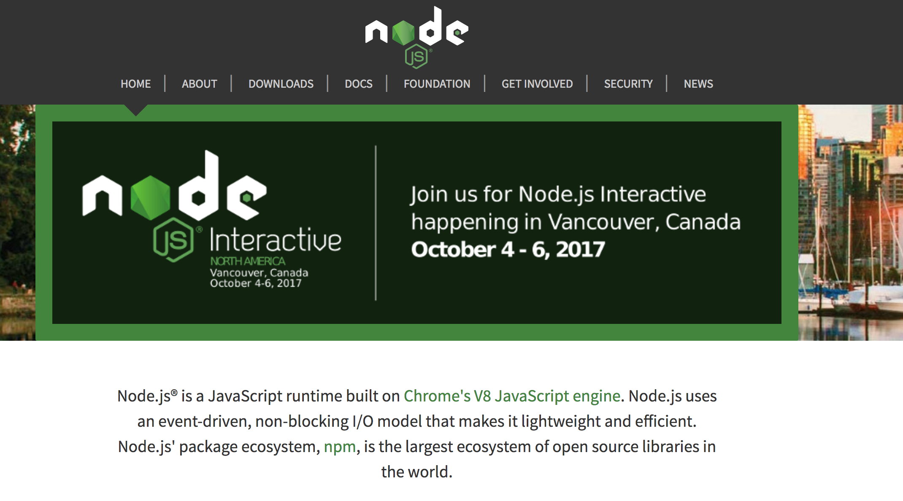

2.6. 浏览器选择
统一使用 Chrome
作为 Web 开发者，我们的无论是浏览信息或者开发项目，都离不开浏览器。在本书中，为了避免歧义，我们 要求 大家统一使用 Chrome 作为指定浏览器。
Google Chrome，是一款由 Google 公司开发的网页浏览器。Chrome 在 2008 年 9 月 2 日发布 Beta 版本，一经发布就广受好评。提供 50 种语言版本，有 Windows、OS X、Linux、Android、以及 iOS 版本提供下载。
对于访问国外网络慢的同学，我们为你提供了百度盘下载：Mac 用户 或是 Windows 用户。
为什么选择 Chrome？
1. 因为市场占有率第一
根据 statcounter.com 的数据，Chrome 浏览器市场占有率排第一：

根据 百度统计公开数据，Chrome 浏览器在国内市场占有率第一：

另一可供参考的数据是 Laravel China 社区 的网站统计数据，Laravel China 上的用户基本上都是开发者：

2. 功能强大
Chrome 有一个非常强大的『开发者工具栏』，你可以利用它实时修改 HTML 结构、更改 CSS 属性、断点调试 JavaScript 代码、监控网页 HTTP 请求等：

强大的插件系统，Chrome 商店 上有各式各样的插件提供下载：

3. 开放的生态圈
Webkit 是 Chrome 底层的渲染引擎，目前 WebKit 基本上是一统天下了，后台有两家大公司在支持，一个是 Google 一个是 Apple，Chrome、Safari、Opera，国内的遨游浏览器、猎豹浏览器、百度浏览器、搜狗浏览器、360极速浏览器等（百度百科）。
Chromium 是 Google Chrome 的开源版本，国内很多浏览器产商都是基于它来定制开发，然后推出自己品牌的浏览器。
Atom 基于 Electron 开发的，而 Electron 是基于 Webkit 项目开发的，你在使用 Atom 时，也可以很轻松的召唤出 Chrome 开发者工具。

现代浏览器一般有两个渲染引擎，一个 Dom 页面渲染引擎，一个是 JavaScript 引擎。Webkit 是 Chrome 的 Dom 页面渲染引擎。Chrome 的 JavaScript 引擎叫 V8，很酷的名字，不过听说过这个的人应该不多。V8 比较知名的应用是 node.js， 2009 年 5 月份，Ryan Dahl 将 V8 放到服务器端，为 JavaScript 提供了一个服务器端的运行环境，就变成了 node.js。

综上所述，可以看出 Chrome 拥有一个非常开放的生态圈，以上提到的软件都是完全的代码开源。其中大部分技术的发展趋势非常快速，作为开发者，你会越来越发现身边的环境会被其影响到。既然是趋势，作为新手的我们，跟着趋势走，大概方向上错不了。
最后再强调一次，请不要使用除了 Chrome 之外的其他浏览器。虽然浏览器兼容性是一个 Web 开发离不开的话题，但是超出了我们本教程的讨论范畴。